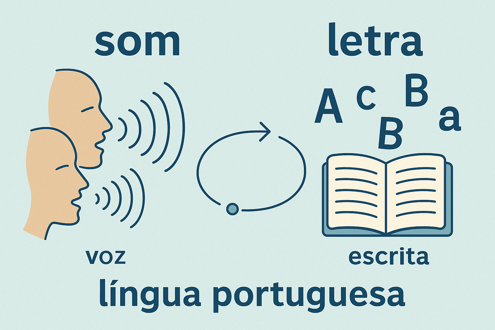

Relação entre Fonema e Grafema na Língua Portuguesa
A relação entre a linguagem falada e a linguagem escrita constitui um dos domínios mais fascinantes, fecundos e desafiadores da ciência linguística. Para o senso comum, frequentemente educado sob a ilusão da transparência ortográfica, a escrita é tomada como um espelho fiel da fala, e as letras são tratadas como se fossem os próprios sons. No entanto, para a moderna Linguística Teórica e Aplicada, a fala e a escrita pertencem a ordens ontológicas radicalmente distintas: a primeira é biológica, espontânea e primordial; a segunda é uma tecnologia cultural arbitrária, estática e secundária.
No cerne dessa interface situam-se duas categorias conceituais indispensáveis: o fonema e o grafema. Enquanto o fonema habita o sistema abstrato da oralidade como a unidade mínima sonora capaz de distinguir significados no interior de uma comunidade de falantes, o grafema reside no plano visual da ortografia como o símbolo alfabético convencionado historicamente para fixar a mensagem no suporte físico.
Na Língua Portuguesa, a correspondência entre som e escrita não é biunívoca nem perfeita. Nosso sistema ortográfico não é puramente fonético, mas misto, combinando princípios de transcrição fonológica com fortes determinações de ordem etimológica e histórica. Compreender essa dinâmica assimétrica é a chave para superar as dificuldades de ortografia, qualificar a prática pedagógica da alfabetização e resolver questões complexas de concursos públicos e exames vestibulares.
Neste artigo acadêmico, você explorará a distinção epistemológica entre fonema, fone e grafema, as causas históricas e etimológicas da complexidade ortográfica lusa, as regularidades e irregularidades da escrita (poligrafia e polifonia), o funcionamento exato de dígrafos e dífonos, além de quadros comparativos, roteiros de contagem fonêmica, questões comentadas de provas oficiais e sínteses conceituais.

O estatuto ontológico da fala versus a escrita
A faculdade da fala é universal na espécie humana: toda criança com aparelho fonador íntegro e imersa em convívio social adquire a sua língua materna espontaneamente, sem necessidade de instrução formal ou escolarização. A escrita, por sua vez, é uma convenção semiótica artificial criada há pouco mais de cinco mil anos. Ela exige ensino explícito, esforço sistemático e memorização de normas institucionais (CAGLIARI, 2002; SOARES, 2016).
Quando as sociedades inventaram os alfabetos, o objetivo original era criar uma representação direta onde a cada som correspondesse uma letra exclusiva. Contudo, ao longo dos séculos, a fala continuou seu percurso natural de transformação ininterrupta (fenômenos de assimilação, síncope, apócope e redução), enquanto a escrita permaneceu conservada pela inércia dos textos sagrados, leis jurídicas e documentos estatais. O resultado desse descompasso histórico é o fosso existente entre o que se pronuncia e o que se grafa.
A primazia da oralidade sobre a escrita
“A língua falada é a língua verdadeira, cuja manifestação sonora existe no tempo e se apoia na fisiologia do corpo humano. A escrita é uma tentativa secundária e imperfeita de representar no espaço gráfico a realidade viva da linguagem. Confundir o fonema com a letra é como confundir uma pessoa real com o seu retrato desenhado” (CÂMARA JR., 2011, p. 28).
Definições conceituais: Fone, Fonema e Grafema
Para estabelecer uma análise rigorosa do sistema linguístico, é imperativo separar três instâncias que frequentemente são amalgamadas pelo leigo:
Fonema (O Som Funcional Abstrato)
É a menor unidade sonora abstrata e distintiva pertencente ao sistema fonológico de uma língua. O fonema não tem significado próprio, mas tem a capacidade de distinguir significados quando contrastado com outro segmento em pares mínimos (como a troca de /p/ por /b/ em pato / bato). Grafado sempre entre barras inclinadas / /.
Natureza: Imagem acústica e mental compartilhada pelos falantes.
Grafema (A Unidade Gráfica Visual)
É a menor unidade gráfica distintiva pertencente ao sistema de escrita alfabética. Trata-se da letra ou do dígrafo normatizado que cumpre a função de representar visualmente os fonemas no papel ou na tela digital. Grafado comumente entre aspas ou em itálico (como b, t, ch).
Natureza: Símbolo visual, arbitrário e convencionalizado culturalmente.
Ao lado de ambos situa-se o fone (grafado entre colchetes [ ]), que representa o som real, físico e material produzido pelo aparelho fonador e medido no oscilograma, com todas as suas variações dialetais individuais e contextuais (alofones).
A assimetria entre som e escrita no português
Em um sistema alfabético ideal e perfeitamente transparente, vigoraria uma relação estritamente biunívoca: cada fonema teria apenas um grafema correspondente, e cada grafema representaria sempre o mesmo fonema. No português brasileiro, essa simetria perfeita ocorre apenas com um subconjunto de consoantes oclusivas e labiais (como /p/ → p, /b/ → b, /t/ → t, /d/ → d, /f/ → f, /v/ → v).
No restante do sistema ortográfico, imperam relações multívocas e complexas, divididas em duas matrizes fundamentais:
Tipologia das Assimetrias Grafofonêmicas
- Poligrafia (Um fonema com múltiplas grafias): o mesmo som da fala pode ser registrado por diferentes letras ou dígrafos ortográficos, dependendo da etimologia histórica da palavra;
- Polifonia (Um grafema com múltiplos fonemas): a mesma letra pode assumir valores sonoros completamente distintos de acordo com o contexto fonotático e a origem lexical;
- Grafema Apropriado sem Fonema (Letra Muda): letras mantidas na ortografia que não encontram qualquer realização física nos órgãos da fala;
- Dígrafo (Duas letras para um som): agrupamento de dois caracteres gráficos que se fundem para expressar uma única unidade sonora;
- Dífono (Uma letra para dois sons): um único caractere gráfico que desencadeia a pronúncia de uma sequência de dois fonemas consonantais consecutivos.
1. Poligrafia: múltiplos caminhos gráficos para o mesmo som
O caso mais notório de poligrafia no português ocorre com a fricativa alveolar surda /s/. Em virtude de confluências históricas do latim e de empréstimos eruditos, o fonema /s/ pode ser registrado por até sete grafemas diferentes:
- Com a letra S: em posição inicial ou após consoante (ex.: sapo, pensar, pulso);
- Com o dígrafo SS: em posição intervocálica para manter o valor surdo (ex.: passo, missa, osso);
- Com a letra C: diante das vogais e e i (ex.: certo, cidade, cinema);
- Com a letra Ç: diante das vogais a, o, u (ex.: açaí, laço, açúcar);
- Com o dígrafo SC: em vocábulos de matriz etimológica erudita (ex.: nascer, crescer, disciplina);
- Com o dígrafo SÇ: em flexões verbais específicas diante de a e o (ex.: nasço, cresça);
- Com o dígrafo XC: em formas cultas latinas (ex.: excesso, excelente, exceto).
Fenômeno análogo ocorre com o fonema fricativo sonoro /z/, grafado com z (zebra, azeite), com s intervocálico (casa, mesa) e com x intervocálico precedido de e (exame, exército).
2. Polifonia: a versatilidade fonética da letra 'X'
No polo oposto à poligrafia está a polifonia, cujo exemplo máximo é o grafema X. Trata-se da letra de maior plasticidade fônica da Língua Portuguesa, desempenhando cinco funções distintas:
| Valor Fônico do 'X' | Fonema Representado (IPA) | Exemplos no Português | Condicionamento Articulatório |
|---|---|---|---|
| Som Chiante | /ʃ/ (fricativa pós-alveolar surda) | xícara, lixo, enxame, xadrez | Padrão herdado de palavras árabes, indígenas ou latinas com 'x'. |
| Som Zoador | /z/ (fricativa alveolar sonora) | exame, exército, exato, êxodo | Sistemático no prefixo latino ex- seguido de vogal. |
| Som de Sibilante | /s/ (fricativa alveolar surda) | texto, trouxe, auxílio, máximo, próximo | Em final de sílaba travada ou por conservação etimológica latina. |
| Dífono (Dois Sons) | /ks/ (oclusiva velar + fricativa alveolar) | táxi, fixo, tórax, anexo, oxigênio | Em vocábulos eruditos greco-latinos, onde o 'x' equivale a [ks]. |
| Letra com Valor Nulo | ∅ (integração em dígrafo) | excesso, excelente, excitar | Acoplado à letra 'c', onde o dígrafo 'xc' soa puramente como /s/. |
3. Dígrafos e Dífonos: a assimetria quantitativa
O cálculo entre o número de caracteres ortográficos e o número real de unidades sonoras exige o domínio rigoroso de dois conceitos estruturantes:
Dígrafos (Duas Letras = Um Fonema)
Ocorre quando duas letras consecutivas operam em conjunto para representar um único fonema. Classificam-se em:
- Dígrafos Consonantais: ch (/ʃ/ em chave), lh (/ʎ/ em filho), nh (/ɲ/ em ninho), rr (/ʁ/ em carro), ss (/s/ em massa), sc (/s/ em nascer), sç (/s/ em desço), xc (/s/ em exceto), gu (/g/ em guerra) e qu (/k/ em quilo);
- Dígrafos Vocálicos (Nasais): ocorrem quando as letras m e n atuam em final de sílaba como marcas diacríticas de nasalização da vogal precedente (ex.: canto [ˈkɐ̃.tu] → 5 letras e 4 fonemas; tempo [ˈtẽ.pu] → 5 letras e 4 fonemas).
Dífonos (Uma Letra = Dois Fonemas)
Ocorre no sentido diametralmente inverso: um único caractere gráfico desencadeia a realização fônica de dois fonemas consonantais autônomos articulados em rápida sucessão:
- O 'X' Dífono (/ks/): na palavra táxi, temos 4 letras (t-a-x-i), contudo pronunciam-se 5 fonemas (/t-a-k-s-i/);
- Na palavra tórax, observam-se 5 letras e 6 fonemas (/t-ɔ-ɾ-a-k-s/);
- Na palavra fixo, constatam-se 4 letras e 5 fonemas (/f-i-k-s-u/).
Atenção ao GU e QU: quando são dígrafos e quando não são?
Os grupos gráficos gu e qu são considerados dígrafos única e exclusivamente quando a letra u não é pronunciada (permanecendo muda), servindo apenas para indicar que o g soa como oclusiva /g/ e o q soa como oclusiva /k/ diante de e e i (ex.: guerra [ˈgɛ.ʁɐ], quilo [ˈki.lu]). Por outro lado, quando a letra u é efetivamente pronunciada como semivogal [w], não há dígrafo, mas sim encontro vocálico / ditongo (ex.: água [ˈa.gwɐ], quase [ˈkwa.zi], tranquilo [tɾɐ̃ˈkwi.lu]).
Por que a ortografia do português é assim? A herança histórica
As aparentes "incoerências" da escrita da língua portuguesa não decorrem de capricho ou desorganização dos gramáticos, mas refletem a memória histórica da língua. O português descende diretamente do latim vulgar levado à Península Ibérica pelos soldados romanos. Ao longo de sua trajetória, sofreu aportes lexicais profundos do árabe (séculos VIII a XIII), do grego clássico (revitalizado no Renascimento e na ciência) e do francês (séculos XVIII e XIX).
Até o início do século XX, o português adotava a chamada ortografia etimológica pseudoerudita, na qual palavras eram grafadas com excesso de consoantes mudas gregas e latinas (como pharmacia, prompto, diphthongo, theatro). A grande Reforma Ortográfica de 1911 em Portugal (e o Formulário Ortográfico de 1943 no Brasil) simplificou radicalmente a escrita, eliminando as consoantes mudas no interior das palavras.
Contudo, os legisladores ortográficos decidiram preservar a letra H inicial em vocábulos como homem, hora e hoje por puro respeito à tradição genealógica das raízes latinas (homo, hora, hodie), demonstrando que a ortografia é um pacto cultural de memória que concilia a facilidade fônica com a história etimológica (BECHARA, 2019; CÂMARA JR., 2011).
Roteiro metodológico: como calcular a contagem de fonemas
O cálculo rigoroso da correlação entre letras e fonemas é uma das habilidades mais exigidas em avaliações de Língua Portuguesa. O procedimento analítico a seguir sintetiza as etapas operacionais para evitar equívocos:
Passo a Passo para Contagem de Letras e Fonemas
- Contagem bruta de caracteres ortográficos: conte todas as letras desenhadas no vocábulo, de ponta a ponta;
- Identificação e isolamento do H inicial: se a palavra iniciar pela letra h etimológica (sem som), subtraia 1 da contagem fônica;
- Rastreamento de dígrafos consonantais: localize pares como ch, lh, nh, rr, ss, sc, sç, xc e os grupos gu/qu (sem som de 'u'). Para cada dígrafo consonantal identificado, subtraia 1 fonema;
- Rastreamento de dígrafos vocálicos (nasalidade em coda): verifique se as letras m e n estão travando sílaba para nasalizar a vogal anterior (como em canto, dente, bomba). Cada vogal nasalizada por 'm' ou 'n' equivale a 1 dígrafo: subtraia 1 fonema;
- Rastreamento de dífono na letra X: verifique se a letra x soa com o valor composto de [ks] (como em táxi, fixo). Se houver som de [ks], adicione 1 fonema à contagem;
- Obtenção do saldo final: subtraia as deduções e adicione os acréscimos ao total de letras brutas para formalizar a contagem fonêmica definitiva.
Exemplo prático de análise fonema-grafema aplicada
Palavras sob análise laboratorial
Examinemos quatro vocábulos representativos que costumam gerar dúvidas em provas e materiais didáticos: chuveiro, excesso, táxi e guerra.
Demonstração analítica passo a passo
1. Chuveiro:
Letras ortográficas: c-h-u-v-e-i-r-o (8 letras).
Análise fônica: o grupo ch forma um dígrafo consonantal representativo do fonema /ʃ/. Os demais segmentos possuem correspondência unitária: /ʃ-u-v-e-j-ɾ-u/.
Resultado: 8 letras e 7 fonemas.
2. Excesso:
Letras ortográficas: e-x-c-e-s-s-o (7 letras).
Análise fônica: ocorrem dois dígrafos simultâneos — o dígrafo xc e o dígrafo ss, ambos representando o mesmo fonema /s/. Estrutura fônica: /e-s-e-s-u/.
Resultado: 7 letras e 5 fonemas.
3. Táxi:
Letras ortográficas: t-a-x-i (4 letras).
Análise fônica: a letra x atua como dífono, desencadeando a emissão de dois fonemas consecutivos (/k/ + /s/). Estrutura fônica: /t-a-k-s-i/.
Resultado: 4 letras e 5 fonemas.
4. Guerra:
Letras ortográficas: g-u-e-r-r-a (6 letras).
Análise fônica: ocorrem dois dígrafos consonantais paralelos — gu (o 'u' não soa) representando o fonema /g/, e rr representando a vibrante/fricativa /ʁ/. Estrutura fônica: /g-ɛ-ʁ-ɐ/.
Resultado: 6 letras e 4 fonemas.
Conclusão
A análise comprova que o número de letras não coincide necessariamente com o número de fonemas. Enquanto excesso e guerra possuem menos fonemas que letras (pela presença de dígrafos), táxi possui mais fonemas que letras (pela atuação do dífono).
Questões para estudo e reflexão
Questão 1
(PAES UEMA / Letras) Em qual das alternativas abaixo todos os vocábulos apresentam rigorosamente o mesmo número de letras e de fonemas?
a) Chuva, hora, tempo.
b) Pato, selo, vida.
c) Carro, chave, táxi.
d) Guerra, campo, fixo.
Ver resposta comentada
Resposta comentada: Alternativa B. Em pato (/p-a-t-u/), selo (/s-e-l-u/) e vida (/v-i-d-ɐ/), todas as palavras possuem exatamente 4 letras e 4 fonemas, vigorando a correspondência biunívoca perfeita sem dígrafos, dífonos ou letras mudas. Nas demais alternativas ocorrem dígrafos (chuva, carro, chave, guerra reduzem fonemas), dífonos (táxi, fixo aumentam fonemas), letras mudas (hora tem 4 letras e 3 fonemas) e dígrafos nasais (tempo, campo reduzem fonemas).
Questão 2
(ENEM / Variação e Alfabetização) Uma criança no início do ensino fundamental escreve em sua redação: "O gato subiu no telhado e fez munto barulio". Sob o ponto de vista da relação fonema-grafema, como se explicam os erros em "munto" (muito) e "barulio" (barulho)?
Ver resposta comentada
Resposta comentada: Os erros decorrem da primazia da percepção fonética oral da criança sobre as convenções arbitrárias da escrita. Em "munto", a criança percebeu acusticamente a nasalidade da semivogal da palavra muito [ˈmũj.tu] e a registrou utilizando a consoante nasal n em posição de dígrafo, como em canto. Em "barulio", a criança identificou a lateral palatal /ʎ/ e a transcreveu como o encontro da lateral com a semivogal li ([li]), demonstrando hipótese de escrita alfabética legítima baseada na escuta atenta, carecendo apenas de domínio da convenção ortográfica do dígrafo lh.
Questão 3
(Concurso Público / Magistério) A palavra oxigênio apresenta qual correlação quantitativa exata entre caracteres ortográficos (letras) e unidades sonoras distintivas (fonemas)?
Ver resposta comentada
Resposta comentada: A palavra oxigênio possui 8 letras e 9 fonemas. A decomposição das letras é: o-x-i-g-ê-n-i-o (8 letras). Ao analisarmos os fonemas, a letra x opera como dífono assumindo o valor duplo de /ks/ (/o-k-s-i-ʒ-e-n-j-u/), o que acrescenta um fonema ao saldo total. O segmento ê é uma vogal tônica oral/nasalizada por contiguidade que antecede a consoante /n/ que inicia a sílaba seguinte, não formando dígrafo de coda. Logo, temos 8 letras e 9 fonemas.
Questão 4
(Vestibular Tradicional / Gramática) Por que os grupos SC e XC são classificados como dígrafos em palavras como nascer e exceção, mas deixam de sê-lo em vocábulos como escada e excursão?
Ver resposta comentada
Resposta comentada: Porque a definição científica de dígrafo exige que duas letras representem um único e mesmo fonema. Em nascer (/naˈseʁ/) e exceção (/eseˈsɐ̃w/), as duas letras fundem-se perfeitamente para soar como o fonema único /s/ diante da vogal e. Já em escada (/isˈka.dɐ/) e excursão (/es.kuʁˈsɐ̃w/), cada letra conserva a sua autonomia fonética independente: o s e o x representam o som sibilante /s/, enquanto a letra c diante de a e u representa a consoante oclusiva velar /k/, configurando encontro consonantal e não dígrafo.
Questão 5
(Mestre Kira / Pedagogia do Letramento) De acordo com os estudos de Artur Gomes de Morais, como a escola deve classificar os erros ortográficos dos alunos e de que forma essa classificação orienta o ensino da relação fonema-grafema?
Ver resposta comentada
Resposta comentada: Morais divide os erros ortográficos em duas categorias fundamentais: (1) Erros em regularidades ortográficas (que seguem regras contextuais previsíveis, como o uso de r/rr ou o uso de m antes de p e b), que devem ser ensinados mediante reflexão metalinguística e dedução de regras pelos estudantes; e (2) Erros em irregularidades ortográficas (casos em que múltiplos grafemas competem pelo mesmo som sem regra contextual, como /s/ grafado com s, c ou ç), que não podem ser deduzidos por regras lógicas e exigem memorização visual, leitura frequente, consulta ao dicionário e estudo etimológico.
Resumo da Relação entre Fonema e Grafema
- A fala é biológica, espontânea e primordial; a escrita é uma tecnologia semiótica cultural, secundária e arbitrária;
- O fonema / / é a unidade abstrata e sonora distintiva da língua oral, enquanto o grafema é a letra ou dígrafo do sistema alfabético da escrita;
- A ortografia da Língua Portuguesa não é puramente fonética, mas mista, combinando representação fônica com conservação etimológica e histórica;
- A poligrafia ocorre quando um único fonema possui múltiplas formas de ser grafado, tendo o fonema /s/ como expoente máximo (s, ss, c, ç, sc, sç, xc);
- A polifonia manifesta-se quando a mesma letra expressa múltiplos sons, destacando-se a versatilidade do grafema 'X' (/ʃ/, /z/, /s/, /ks/ e valor nulo);
- Dígrafo consiste em duas letras representando um único fonema (consonantais e vocálicos/nasais); dífono ocorre quando uma letra representa dois sons (/ks/);
- A letra H inicial é conservada na escrita por deferência à tradição etimológica latina e grega, carecendo de realização sonora na fala viva;
- O domínio das correspondências fonema-grafema é indispensável para a superação de dificuldades ortográficas, o letramento e o êxito em exames e concursos.
Perguntas frequentes sobre Fonema e Grafema
Qual é a diferença fundamental entre fonema e grafema?
O fonema é uma unidade sonora abstrata e distintiva pertencente ao sistema fonológico da fala oral (aquilo que ouvimos e emitimos, grafado entre barras / /). O grafema é a menor unidade gráfica visual pertencente ao sistema alfabético da escrita convencional (a letra ou dígrafo que desenhamos no papel para tentar representar o som).
Por que a escrita do português não corresponde perfeitamente à fala?
Porque a ortografia da língua portuguesa não é puramente fonética, mas mista e etimológica. Ela preserva marcas históricas de sua evolução a partir do latim, além de incorporações do grego e de outras línguas românicas. Ao longo dos séculos, a pronúncia viva dos falantes transformou-se com rapidez, enquanto a convenção escrita foi fixada por leis ortográficas conservadoras.
O que é um dígrafo e quais são os seus tipos no português?
Dígrafo é o agrupamento de duas letras consecutivas que representam um único e indivisível fonema. Dividem-se em dígrafos consonantais (como ch, lh, nh, rr, ss, sc, sç, xc, gu, qu) e dígrafos vocálicos ou nasais (as sequências am, an, em, en, im, in, om, on, um, un quando registram vogais nasais em final de sílaba).
O que é um dífono?
Dífono ocorre no processo inverso ao dígrafo: é o caso em que uma única letra representa simultaneamente dois fonemas consonantais consecutivos. No português, o exemplo clássico é a letra 'x' quando assume o valor sonoro de /ks/, como em táxi (/ˈtak.si/), tórax (/ˈtɔ.ɾaks/) e fixo (/ˈfik.su/).
Quais são os diferentes sons que a letra 'X' pode representar?
A letra X é o caso mais notável de polifonia no português, podendo representar: (1) O fonema fricativo pós-alveolar /ʃ/ (xícara, lixo); (2) O fonema fricativo alveolar sonoro /z/ (exame, exército); (3) O fonema fricativo alveolar surdo /s/ (texto, auxílio, máximo); (4) O grupo biconsonantal dífono /ks/ (táxi, fixo); e (5) Valor nulo quando atua em dígrafos como 'xc' em excesso.
Por que a letra 'H' é mantida no início de palavras se não possui som?
A permanência do H inicial em palavras como homem, hora, hoje e herói decorre exclusivamente de tradição etimológica histórica. No latim arcaico, a letra representava uma aspiração glotal, som que se perdeu já no latim vulgar. O Acordo Ortográfico optou por manter o H inicial por respeito à memória etimológica das raízes latinas e gregas.
Por que o fonema /s/ possui tantas formas de ser escrito?
O fonema /s/ é o campeão da poligrafia no português porque resultou da fusão fonológica de múltiplos sons consonantais distintos do latim medieval (africadas dentais e alveolares surdas). Quando esses sons convergiram historicamente para a mesma pronúncia /s/, o sistema ortográfico preservou as diferentes matrizes gráficas originárias: s, ss, c, ç, sc, sç e xc.
Como a contagem de fonemas é cobrada em provas de concursos e vestibulares?
As bancas avaliam se o candidato sabe subtrair letras quando há dígrafos (ex.: carro tem 5 letras e 4 fonemas) ou letras mudas (hora tem 4 letras e 3 fonemas), e se sabe somar fonemas quando há dífono (ex.: táxi tem 4 letras e 5 fonemas). Palavras como guerra (6 letras e 4 fonemas) exigem reconhecer dois dígrafos simultâneos (gu e rr).
Considerações finais
A relação entre fonema e grafema descortina a complexa tapeçaria histórica e cognitiva sobre a qual se ergue a Língua Portuguesa. Longe de constituir um conjunto arbitrário de armadilhas ortográficas, as assimetrias entre som e letra revelam a convivência dinâmica entre a vitalidade sonora da fala popular e o conservadorismo etimológico que ancora a nossa identidade cultural escrita.
Para professores, estudantes de Letras, fonoaudiólogos e concursandos, a compreensão profunda dessa interface afasta o ensino mecanicista e punitivo da ortografia, substituindo a mera decoreba pela reflexão metalinguística lúcida, rigorosa e emancipatória sobre os reais mecanismos que articulam a voz humana ao texto gráfico.
Conteúdos relacionados
- Introdução à Fonética: o que é, para que serve e como se relaciona com a fonologia
- Classificação dos Sons da Fala: consoantes e vogais na Fonética e na Fonologia
- Classificação Fonética Detalhada das Vogais
- Os órgãos da fala e a produção dos sons da linguagem humana
- Consciência Fonológica: o som como base da alfabetização
- Fonética e Estudo dos Sons da Fala — Índice de Conteúdos
Referências
- BECHARA, Evanildo. Moderna Gramática Portuguesa. 39. ed. rev. e ampl. Rio de Janeiro: Nova Fronteira, 2019.
- CAGLIARI, Luiz Carlos. Alfabetização e Linguística. 10. ed. São Paulo: Scipione, 2002.
- CALLOU, Dinah; LEITE, Yonne. Iniciação à Fonética e à Fonologia. 11. ed. Rio de Janeiro: Jorge Zahar, 2009.
- CÂMARA JR., Joaquim Mattoso. Princípios de linguística geral. 4. ed. Rio de Janeiro: Acadêmica, 1970.
- CÂMARA JR., Joaquim Mattoso. Estrutura da Língua Portuguesa. 46. ed. Petrópolis: Vozes, 2011.
- CRISTÓFARO-SILVA, Thaïs. Fonética e Fonologia do Português: roteiro de estudos e guia de exercícios. 11. ed. São Paulo: Contexto, 2012.
- MORAIS, Artur Gomes de. Ortografia na sala de aula. 1. ed. Belo Horizonte: Autêntica, 2014.
- MORAIS, Artur Gomes de. Sistema de Escrita Alfabética. São Paulo: Melhoramentos, 2012.
- SOARES, Magda. Alfabetização: a questão dos métodos. São Paulo: Contexto, 2016.
Explore Outros Conteúdos
Continue seus estudos acessando outras seções do site Mestre Kira: